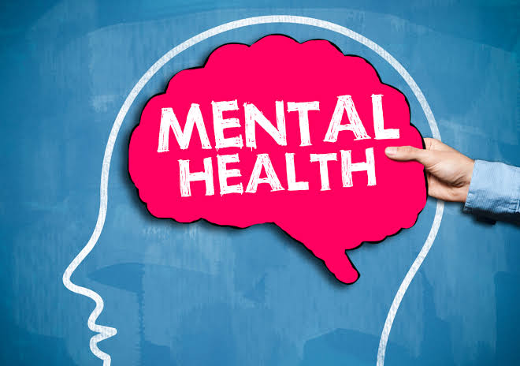
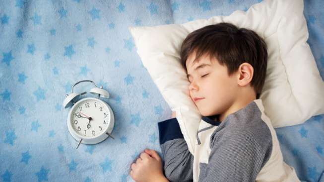

Istirahat yang cukup dan menjaga kesehatan mental merupakan bagian penting dari pola hidup sehat yang sering kali diabaikan. Tubuh membutuhkan waktu untuk beristirahat agar dapat memulihkan energi dan memperbaiki sel-sel yang rusak setelah beraktivitas seharian. Tidur yang cukup, sekitar tujuh hingga delapan jam setiap malam, membantu meningkatkan konsentrasi, daya ingat, dan suasana hati. Kurang tidur dapat menyebabkan kelelahan, menurunnya daya tahan tubuh, serta gangguan emosional seperti mudah marah atau cemas. Selain itu, kesehatan mental juga perlu dijaga agar seseorang dapat menjalani kehidupan dengan lebih seimbang. Mengelola stres dapat dilakukan dengan berbagai cara, seperti melakukan hobi, berolahraga, atau berbicara dengan orang yang dipercaya. Menjaga hubungan sosial yang baik juga dapat memberikan dukungan emosional yang penting bagi kesehatan mental. Menghindari tekanan berlebihan dan memberi waktu untuk diri sendiri merupakan langkah yang bijak dalam menjaga keseimbangan hidup. Dengan istirahat yang cukup dan mental yang sehat, seseorang dapat menjalani aktivitas sehari-hari dengan lebih optimal dan produktif.

